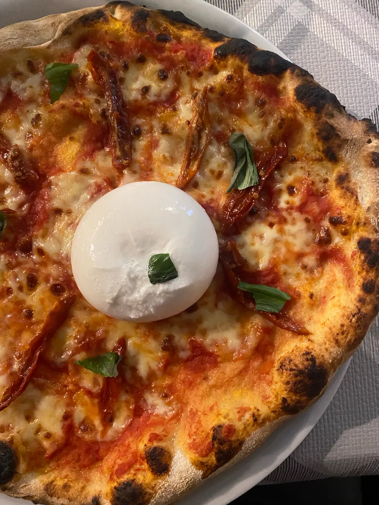
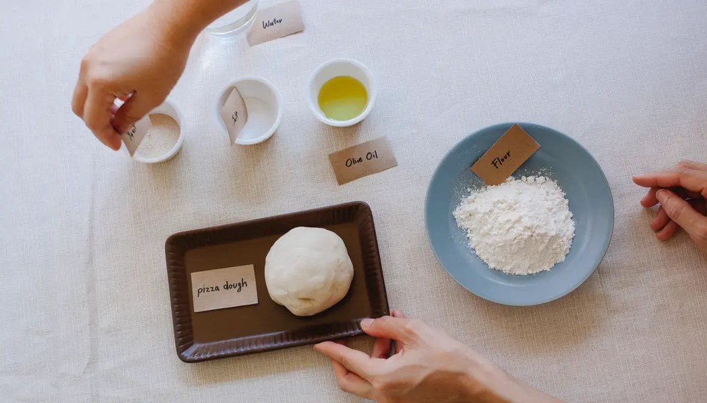
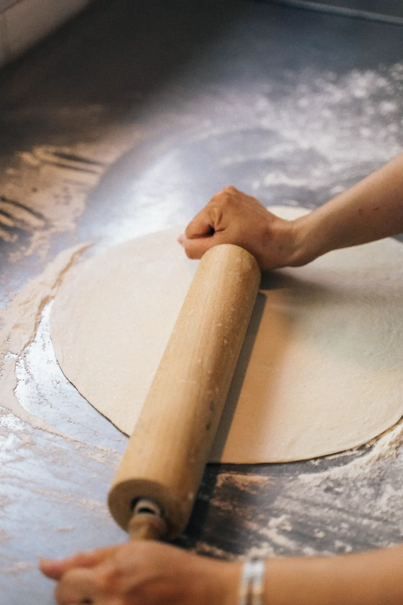
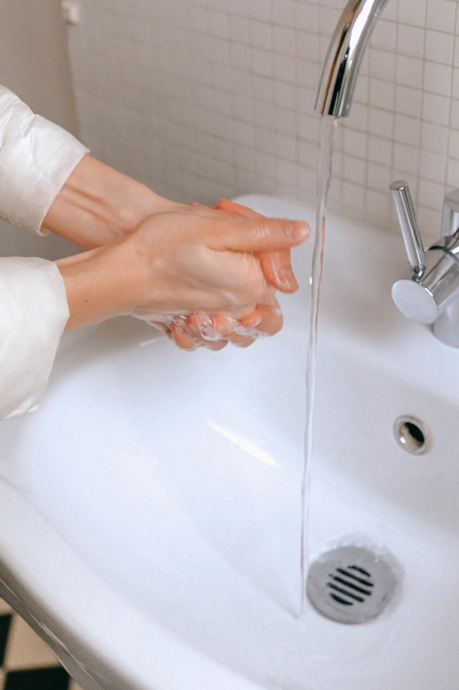
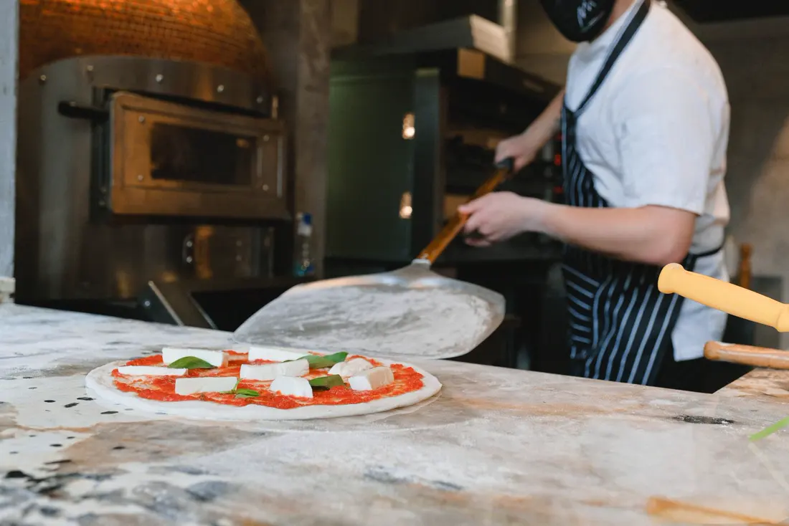
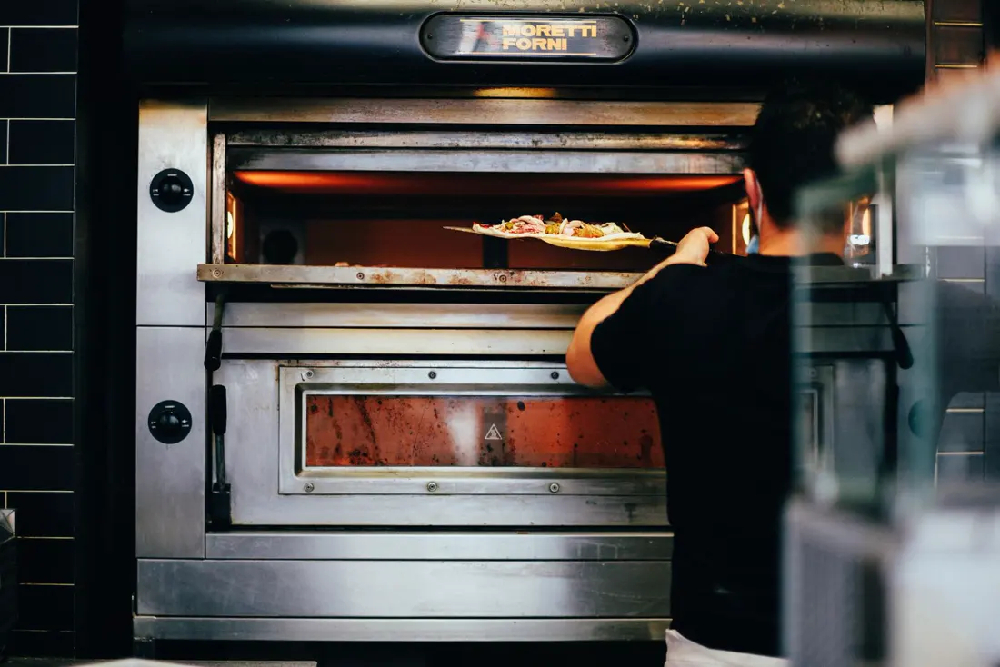
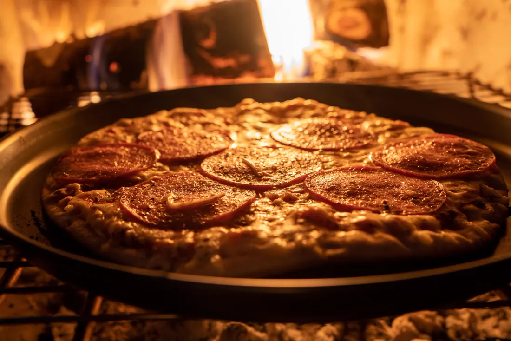

보고 · 만들고 · 나눠요!






영상은 새 창에서 열립니다.
원하는 영상의 링크를 붙여 넣으세요.
YouTube / youtu.be / Shorts 링크 지원 · 재생은 직접 클릭
자체 제작 연주곡 · 35초 반복
영상·음악 저작권은 원 채널에 귀속
09:20–10:30 · 총 70분
진행자 확인용
알레르기 대체재·도구는 체험 전에 꼭 확인하세요. 개인정보는 저장하지 않습니다.
“내 피자 이름은 ____!”